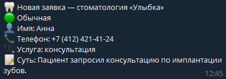

Автоматизация при помощи ИИ
Сайт стоматологии «Улыбка». Заявка с формы попадает к ИИ: он понимает, что беспокоит человека и насколько это срочно. Администратору сразу приходит уведомление в Telegram, а запись на удобное время остаётся в Google Таблицах — без ручной работы.
-
01
Клиент оставляет заявку
Человек заходит на сайт, пишет, что его беспокоит, или выбирает готовый вариант — и жмёт «Записаться». Без звонков и ожидания на линии.
-
02
ИИ определяет срочность и проблему
Нейросеть читает заявку и за секунды раскладывает её по полочкам: насколько это срочно, какая услуга нужна и в чём суть — одной фразой.
-
03
Вам приходит уведомление в Telegram
Готовая карточка заявки прилетает в Telegram: срочность, имя, телефон, услуга и суть. Сразу видно, кому перезвонить первым.

-
04
Запись остаётся в Google Таблицах
Запись на удобное время автоматически попадает в таблицу. Ничего не теряется, вся история заявок — в одном месте.
Нужна такая же автоматизация? Напиши мне в Telegram ↗